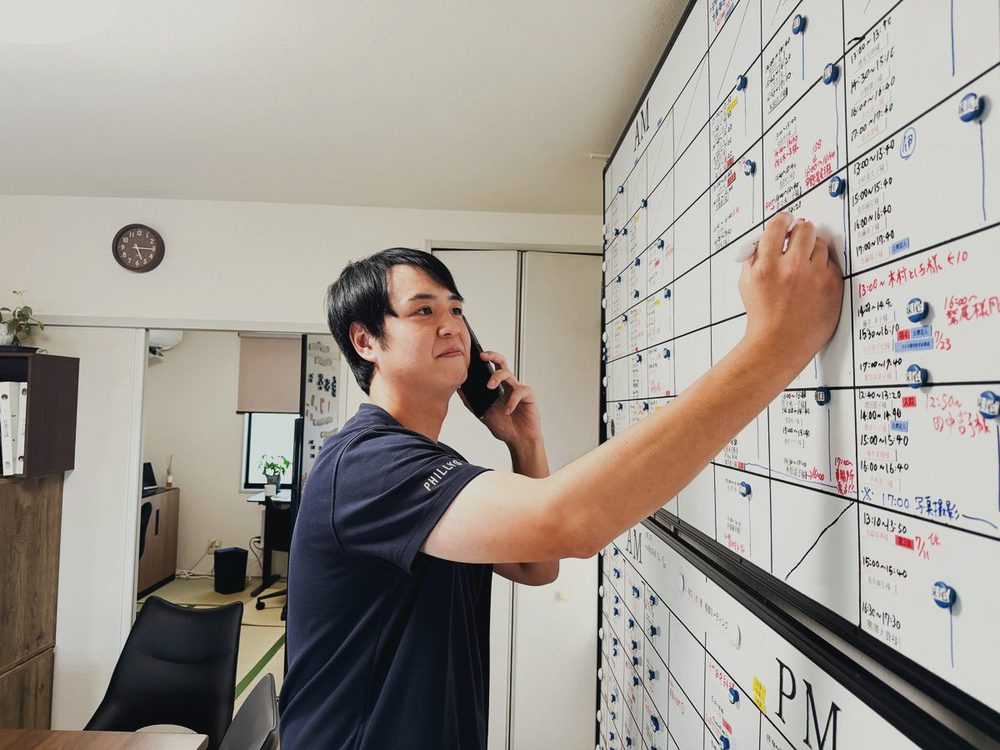
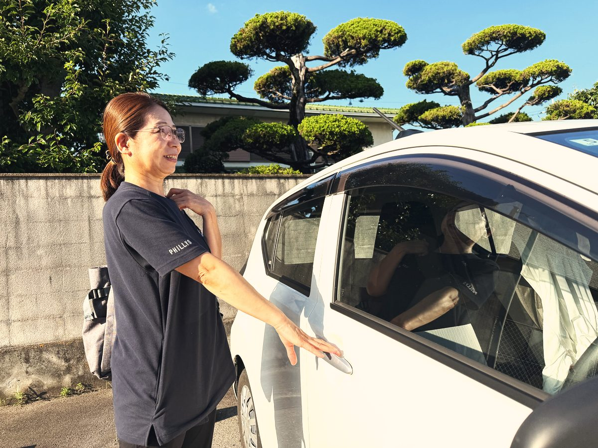
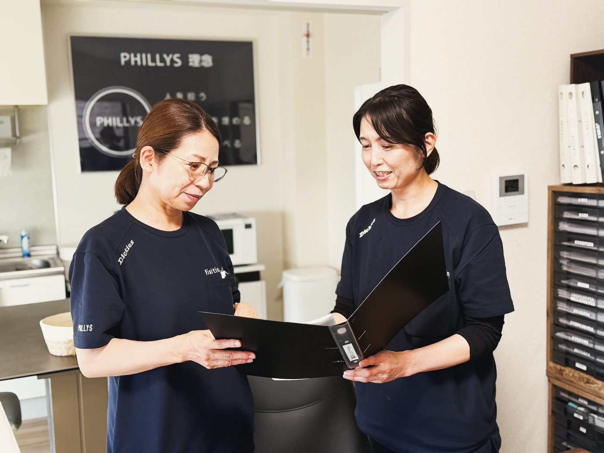

58歳女性ご本人
訪問リハビリをご利用
ほとんど寝ていた私が、外を歩けるように
家でリハビリをしたくて、紹介をしてもらいました。リハビリ士さんが、きてくれるようになってからほとんど寝ていた私が、一緒に外を歩けるようになりました。今は近くのスーパーに歩いていくことが目標です。
Voice
フィリーズをご利用いただいている方と、そのご家族から声を聞かせていただきました。
58歳女性ご本人
訪問リハビリをご利用
家でリハビリをしたくて、紹介をしてもらいました。リハビリ士さんが、きてくれるようになってからほとんど寝ていた私が、一緒に外を歩けるようになりました。今は近くのスーパーに歩いていくことが目標です。
80歳女性ご家族
訪問看護をご利用
母が人工肛門になり、やる気を失っている時に、母が今一番やりたいことを聞いてくださったおかげで目標を持つことができ、そこからの回復がとても早かったです。
70歳男性娘様
訪問看護をご利用
いつもお世話になっています。おかげで現在体調も良く過ごさせてもらっています。何かあった時にいつでも(24時間)連絡すると対応していただけると思うと、とても安心です。これからもよろしくお願いします。先日足湯をして爪を整えていただき、本人もとても気持ちよさそうで本当にありがとうございました。
Activity
事務所での打ち合わせから訪問まで、フィリーズの毎日を少しだけご紹介します。



